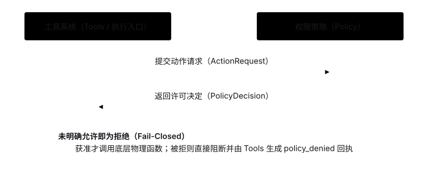
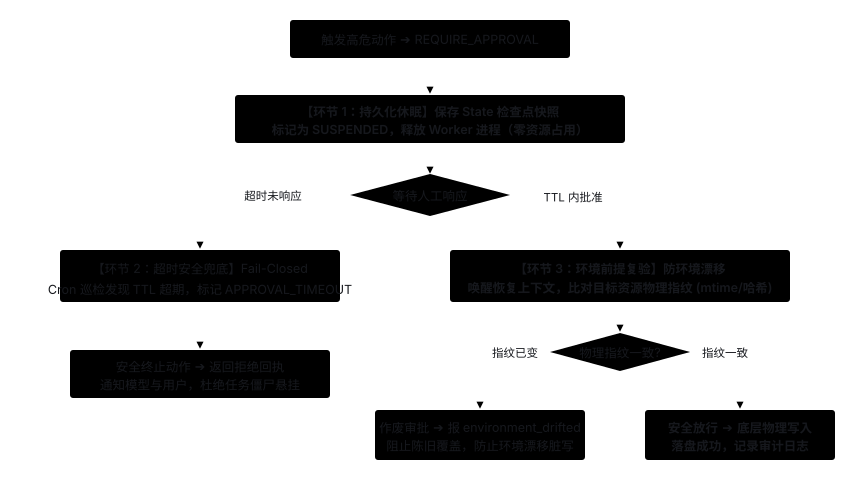

Policy: Check Action Permissions Before Execution
1. Starting Problem: Why Must Permissions Be Checked Before Executing Tools?
As soon as an Agent is given tools that write files, delete files, or call external APIs, the model may propose dangerous operations due to misunderstood instructions or prompt injection from external documents. Consider this scenario:
- User: "Summarize the reference notes and save the summary, without touching the original notes file."
- Model: Calls
write_file(path="notes.txt", content="..."), attempting to overwrite the original notes directly. - (System interception: Before touching the disk, Policy inspects the action, identifies it as "overwriting an existing file," and blocks execution immediately)
This is the core responsibility of the Policy module: evaluating a proposed action against security rules (Rules) to render an authorization decision (Decision) before any tool side effect occurs. Regardless of how the concrete implementation evolves, Policy must uphold four baseline invariants:
- Judge by the actual action rather than the literal tool name: It must distinguish whether a call is "creating a new file (
create)" or "overwriting an existing file (overwrite)," along with the exact target path. - Trust only authoritative rule sources: Decisions must rely solely on application configuration or explicit user confirmation; model-generated text or external documents read during execution can never grant permissions on their own.
- Denials must block execution: Once Policy returns a denial, the underlying tool function must never run, following a strict "deny by default unless explicitly allowed" posture.
- Execution must match the granted permission: If an action is approved as a "create," and the target file comes into existence right before the write occurs, the write must never silently downgrade into an "overwrite."
2. Black-Box Interaction: Action Request In, Authorization Decision Out
Using file-overwrite interception as an example, the black-box interface between the tool system and Policy exchanges just two data structures:
- Input (
ActionRequest): The specific operation and target resource to execute, e.g.,ActionRequest(operation="overwrite", resource="summary.txt"). - Output (
PolicyDecision): Whether execution is allowed and the reason, e.g.,PolicyDecision(allowed=False, reason="Overwriting existing files is not allowed").

Crucial Conceptual Clarification: The Model Provides Intent; the Harness Probes Physical Reality
A common beginner misconception is: "Did the model write operation='overwrite' in its tool call?"—Absolutely not! The model only issues write_file(path="summary.txt", content="..."). The model cannot and must not dictate whether an operation is a creation or an overwrite. The true action type is determined by the Harness after probing the physical disk via lstat():
- Model (LLM): Issues business intent
write_file(path="summary.txt"), expressing "I want to write content to this path." - Tool System (Harness): Probes the workspace disk. If the file does not exist, it constructs
ActionRequest(operation="create"); if the file already exists, it constructsActionRequest(operation="overwrite"). - Policy Module: Evaluates whether to permit the action based on configured security rules. By default,
overwriteyieldsallowed=False. - Security Interception: The underlying physical write is prevented, the original file remains intact, and a
policy_deniedreceipt is returned to the model.

Responsibility boundaries when collaborating with neighboring modules (for concrete Python code, see Stage 2):
- Application entry point (Application): Injects permission rules and workspace configuration when initializing the tool registry.
- Tool system (Tools): Validates arguments and identifies the actual action at runtime, calling Policy uniformly; if denied, generates a
policy_deniedreceipt and returns it to Runner. - Context & State (Context / State): Context only manages model inputs, and State only records past receipts—the fact that an operation was approved in historical records never implies a new call in the current turn is automatically approved.
3. Implementation Options: How to Identify Actions & Evaluate Rules?
When implementing Policy, "how to extract an action from a tool call" and "how to evaluate rules to reach a decision" are two orthogonal design dimensions:
Dimension 1: How to Identify the Action from a Tool Call?
Option A: Declarative permission metadata at registration (Our Approach)
Tools declare their required permission category (such as read / write) and path parameter name when registered, and shared registry code inspects filesystem state to build the ActionRequest automatically. Ideal when multiple tools share the same resource permission model.
For example, see the registration definition of WRITE_FILE (filesystem.py):
WRITE_FILE = ToolDefinition(
name="write_file",
description="Write content to a workspace file...",
arguments_model=WriteFileArguments, # Argument model containing 'path' and 'content'
function=write_file, # Plain function performing physical write
permission="write", # Declaration 1: permission category is "write intent"
path_parameter="path", # Declaration 2: inspect "path" field from arguments
)Why declare it this way? When the model triggers a call, it only supplies a raw JSON arguments dictionary (such as {"path": "summary.txt", "content": "..."}). With these two pieces of metadata, the shared prepare_action() function executes fully automatically:
- Using
path_parameter="path", it extracts the target pathsummary.txt(eliminating repetitive parsing boilerplate across tools); - Using
permission="write", it probes the workspace disk vialstat()to check if the file already exists; - If the file does not exist, it builds
ActionRequest(operation="create"); if it already exists, it buildsActionRequest(operation="overwrite").
Option B: Custom per-tool action extractor functions
Each tool supplies its own function to parse arguments and describe the action. Fits systems where resource shapes vary wildly across tools, at the cost of higher maintenance overhead.
Dimension 2: How to Evaluate Rules?
Option A: In-memory conditional branches with rule injection (Our Approach)
Evaluate directly in memory using configuration flags (such as allow_create, allow_overwrite) and allowlists (such as create_files). Simple, transparent, and ideal for early stages.
When launching the Agent from the CLI entry point, the policy rules are injected into the tool registry (__main__.py):
# 1. The developer decides the security policy: allow creations, forbid overwrites!
policy = Policy(
allow_read=True,
allow_create=True,
allow_overwrite=False # Disallow overwriting by default
)
# 2. Pass policy and workspace path into the ToolRegistry:
tools = ToolRegistry(
definitions=[LIST_FILES, READ_FILE, WRITE_FILE],
workspace=WORKSPACE,
policy=policy # <-- This is "injecting permission rules"!
)Why is it called "injection"? Why not simply remove the write tool to make it read-only?
"Tools provide capabilities; Policy governs authorization." Managing permissions via externally injected Policy offers three core architectural benefits:
- Supports fine-grained allowlists: For instance, setting
Policy(allow_create=False, create_files=frozenset([Path("output/report.md")]))enables "global read-only, but permit generating one specific report file"—impossible by merely removing tools. - Maintains causal awareness and clear feedback: If the model calls an unauthorized tool, it receives a structured
policy_deniedreceipt and can explain to the user that "this action was blocked by security policy," rather than hallucinating or getting confused because the tool is missing. - Unified toolset with dynamic environment switching: With the exact same code and tool definitions, initializing with different Policy instances seamlessly switches between "read-only audit mode," "code generation sandbox mode," and "production refactoring mode."
Option B: Declarative rule configuration
Express allow/deny conditions in config files matched by priority. Mature industry engines such as Open Policy Agent (OPA) (using Rego) and AWS Cedar represent this approach at scale (Policy-as-Code). Note that while OPA/Cedar govern physical tool actions, LLM Safety Guardrails (such as NVIDIA NeMo Guardrails, Guardrails AI, or cloud moderation services like Alibaba Cloud Bailian GreenNet and Azure AI Content Safety) operate at the semantic layer, filtering prompt injections, topic drift, and sensitive PII.
Option C: External policy service
Delegate authorization to a centralized external service. Fits enterprise-wide shared permissions across multiple applications. In production, declarative engines (Option B) are often deployed as external sidecars or central microservices (Option C) where the Agent submits ActionRequest JSON and receives centralized decisions and audit logs without restarting the Agent.
Complete Real-World Scenario: The End-to-End 5-Step Collaborative Loop
Combining action extraction via metadata and rule evaluation via injected policy, when an Agent configured with an "overwrite forbidden" policy attempts an overwrite, the system goes through a deterministic 5-step loop:
- Step 1 (Initialization & Injection): The developer creates
Policy(allow_create=True, allow_overwrite=False)at startup and injects it intoToolRegistry. - Step 2 (Model Intent Expression): The model issues a tool call
write_file(path="summary.txt", content="Report..."). The model does not specify nor containcreateoroverwrite. - Step 3 (Harness Physical Inspection):
ToolRegistryextracts the path usingpath_parameter="path"and probes the disk vialstat(). Finding thatsummary.txtalready exists, the system objectively categorizes this as an overwrite and constructsActionRequest(operation="overwrite", resource="summary.txt"). - Step 4 (Policy Evaluation):
ToolRegistryasks the injected Policy. Matchingallow_overwrite=False, Policy returnsPolicyDecision(allowed=False, reason="Overwrite forbidden"). - Step 5 (Interception & Receipt):
ToolRegistryskips calling the underlying physical write function. The original file remains untouched, and aToolResult(status="policy_denied")with the denial reason is returned to the model.
4. Current Project Choice & Unimplemented Scope
- Current project choice: Uses registration-time permission declarations + shared action identification + centralized registry interception + in-memory conditional rule evaluation (for source walkthrough and hands-on commands, see Stage 2). By default, the CLI allows reading and creating files inside the workspace while forbidding overwriting existing files.
- Not yet implemented (extend on demand): Declarative rule engines, interactive human-in-the-loop approval, short-lived capability tokens, and OS-level sandbox isolation.
5. Expected Outcomes
- Permitted operations execute normally: When reading a file inside the workspace or creating a file that does not yet exist, Policy returns allowed and the operation completes.
- Disallowed overwrites blocked with zero side effects: When attempting to overwrite an existing file, Policy returns
policy_denied, the underlying write function never runs, and the original file remains untouched (see the Stage 2 overwrite-prevention experiment). - No downgrade under concurrent races: After an action is approved as a new file creation, if another process creates the target file before the write occurs, the underlying exclusive-create call fails immediately rather than silently turning into an overwrite.
On-demand reference: Human approval, capability tokens & execution isolation (not yet implemented)
6. Human-in-the-Loop Approval: Evolutionary Path & Lifecycle Pipeline
When a human decision is required (REQUIRE_APPROVAL), execution must safely pause. However, an operating system process must never hang synchronously (causing thread pool exhaustion, memory starvation, and data loss upon restart).
Evolutionary Path Driven by Production Incidents
Human approval is not a simple boolean prompt. It evolved through four distinct architectural stages, where each stage resolved a fatal bottleneck exposed by the previous one:
Stage 0: Binary Evaluation (Allow/Deny) ──(Too strict or too risky)──> Stage 1: CLI Interactive Prompt
│
(Process hung in unattended/multi-tenant)
↓
Stage 2: State Checkpoint & Sleep
│
(Approver never responds / Zombie tasks)
↓
Stage 3: TTL Timeout (Fail-Closed)
│
(Approved days later / Target file changed)
↓
Stage 4: Anti-Drift Fingerprint Check- Stage 0 (Pure Binary Evaluation): Only allow or deny. Dangerous actions are either completely blocked (crippling autonomy) or freely permitted (causing catastrophic failures).
- Stage 1 (CLI Interactive Prompt, e.g. Claude Code): Suspends execution and prompts
[y/n]in the terminal. Limitation: Only works for single-user local CLI tools; background servers or unattended sessions hang indefinitely. - Stage 2 (Asynchronous State Checkpoint & Sleep, e.g. LangGraph
interrupt): Suspends by serializing state into a database (PostgreSQL/Redis) and releases the execution process completely. Limitation: If the human approver forgets to respond, tasks hang permanently as zombie records in the database. - Stage 3 (Deterministic TTL Timeout & Fail-Closed Fallback): Attaches a TTL to every approval request. If expired, scheduled jobs automatically trigger Fail-Closed denial. Limitation: If approved at the very last moment (e.g. days later), the target environment may have changed ("environment drift").
- Stage 4 (Anti-Drift Pre-condition Re-validation): Computes physical resource fingerprints (hash/mtime) at request time and re-validates before execution, revoking stale approvals if files changed.
The Integrated 3-Stage Pipeline (Collaborative, Not Mutually Exclusive)
These three mechanisms are not alternative either-or choices; in production systems, they form an end-to-end coordinated pipeline throughout an approval event's lifecycle:
- Phase 1 (At Approval Trigger: Checkpoint & Sleep): The Runner serializes session state, execution history, and pending actions to persistent storage, marks the run
SUSPENDED, and releases the execution worker thread completely until awakened. - Phase 2 (During Waiting: Timeout Fallback): Each approval ticket has a bounded TTL (e.g. 60 seconds in CLI, 24 hours in enterprise workflows). If expired, background schedulers mark it
APPROVAL_TIMEOUT, denying the action safely (Fail-Closed) and returning an explanatory receipt to the model. - Phase 3 (Upon Wakeup: Pre-condition Re-validation): Before physically executing an approved action, Harness checks the target resource's physical fingerprint (hash or
mtime). If modified during the wait period, the approval is revoked and anenvironment_driftederror is returned to prevent overwriting newer changes.


7. Execution Isolation
Policy decides whether an action is approved; a sandbox restricts what executing code can actually access at the OS/container level. They serve distinct responsibilities. Spawning a subprocess alone does not guarantee filesystem or network isolation, and OS restrictions, containers, or microVMs must be configured to match the authorized scope rather than replacing domain-level Policy checks.
8. Scoped Capability Tokens
In distributed multi-agent or microservice architectures, having every sub-agent query a central policy service over the network for every tool invocation creates severe latency and a single point of failure. Instead, systems use Scoped Capability Tokens:
Intuitive Analogy: A Digital Movie Ticket with Seat & Expiration (like AWS STS Temporary Credentials or Signed JWTs)
- Without tokens: Every time a moviegoer enters a hall or visits the restroom, the usher must make a phone call to the central box office asking "Can this person enter?" (High latency, box office phone line jammed).
- With tokens: The box office mints a cryptographically signed ticket upfront stating: user ID, cinema hall #3 only, valid for 2 hours. Each hall's usher simply validates the signature locally offline—no remote network call needed.
The 3-Step Collaborative Loop in Multi-Agent Systems:
- Step 1 (Central Minting): When delegating tasks, the controller agent (e.g. Planner) requests scoped permissions from the central policy authority. The authority verifies rules and issues an asymmetric signed token containing:
{"subject": "worker-1", "action": "write", "resource": "output/report.md", "exp": 1730000000}. - Step 2 (Delegated Call): The worker agent calls the storage node or sandbox runner, passing this token along with the tool arguments.
- Step 3 (Local Offline Verification): The execution node validates the signature, expiration timestamp, and resource scope locally using a public key. If valid, physical execution proceeds immediately without contacting the central policy service.
Core Architectural Benefits:
- Eliminates Network Latency & Bottlenecks: Enables hundreds of concurrent sub-agents to invoke tools with millisecond-level local validation.
- Least Privilege & Anti-Lateral Movement: Even if a worker agent is manipulated by prompt injection from external content, its token only permits writing to the designated file within a small time window, mathematically preventing lateral privilege escalation across the host system.
9. Untrusted Reference Material & Further Reading
External documents may contain prompt injections attempting to trick the model into proposing unauthorized actions. Instructing the model to ignore malicious instructions helps, but permissions must always be enforced programmatically—documents can never modify Policy rules. For source samples and design references, see Design Basis; for state management around waiting and resuming, see Session / State.